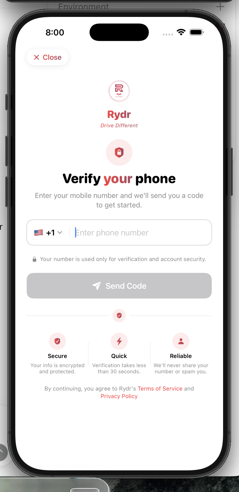
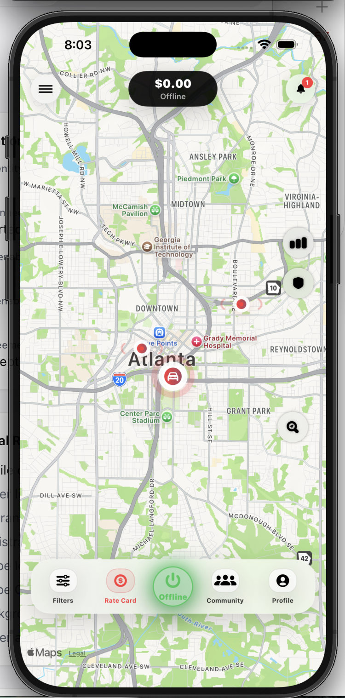
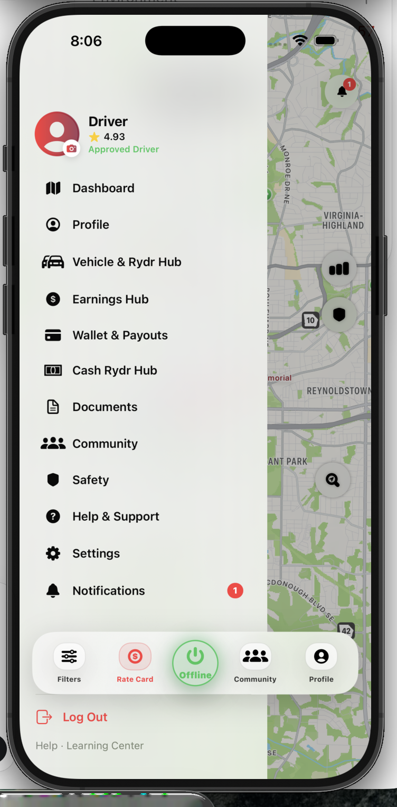
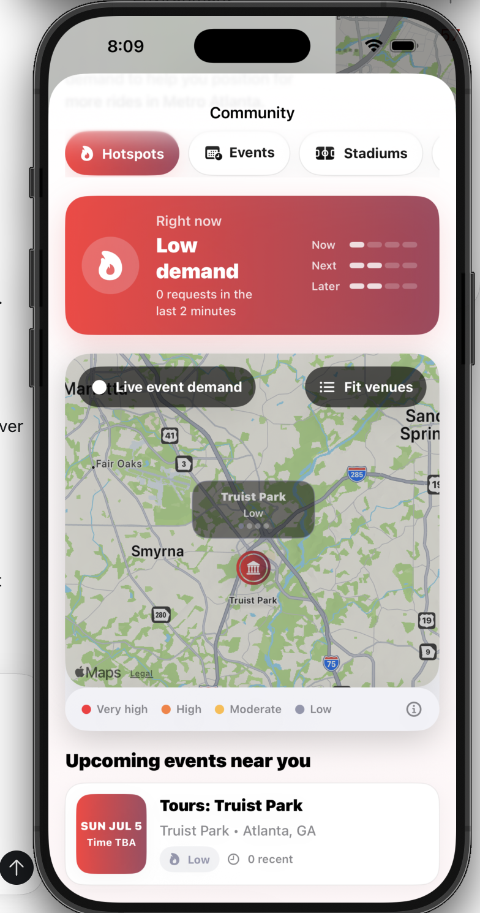
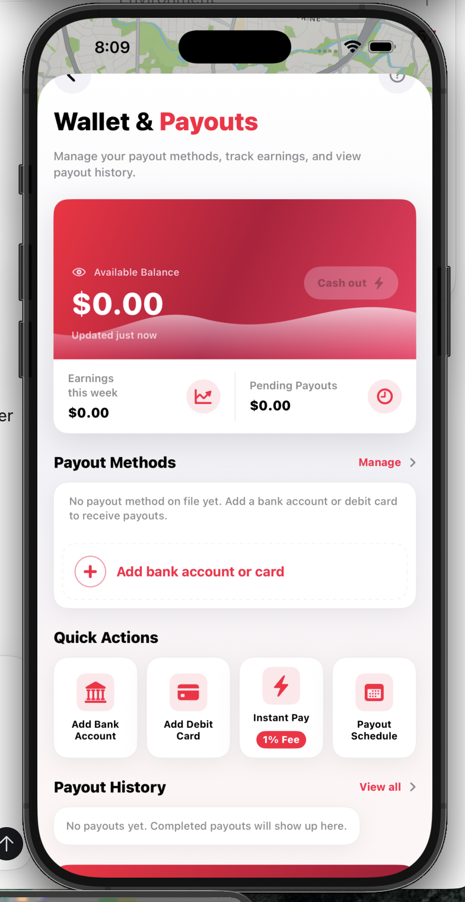

Phone verification
Drivers confirm a mobile number before signup continues, tying the beta approval to a reachable account.
Rydr Driver beta
Rydr Driver is an invite-controlled beta for approved drivers. Sign up starts with phone verification, beta waiver acceptance, document capture, and Mission Control review before live driving.


Beta sign-up path
Driver access is intentionally gated during beta. Approved testers verify their phone, accept the beta waiver, complete profile steps, and submit required driving documents before they can be reviewed.
Drivers confirm a mobile number before signup continues, tying the beta approval to a reachable account.
Testers must accept the beta waiver before entering personal details. Declining returns them to login.
License, registration, and insurance are captured for review so Mission Control can inspect the driver profile.
Mission Control can approve a complete application automatically or manually override a beta driver.
Waiver, sign-up, documents
The public Driver page now mirrors the actual TestFlight path: verification first, beta participation terms before name entry, then document capture and profile review.
Driver operating system
Rydr Driver gives the beta group a live map, online status, incoming request card, driver menu, demand view, and payout tools in one focused app experience.



After approval
Beta drivers can watch nearby demand, review community activity, and manage payout setup once their profile is ready for live driving.


What Mission Control reviews
The Driver beta is designed so the app, website, and Mission Control tell the same story: approved testers enter a controlled flow, submit required items, and can be reviewed without delaying every clean signup.
Phone verification anchors the signup flow and supports account recovery during beta.
Driver license images can be attached to the driver profile for review and expiration checks.
Registration and insurance are collected before driver approval and live availability.
Mission Control remains the final authority for beta approval and online eligibility.
Driver beta
Driver beta approvals are reviewed through Mission Control. Approved drivers receive next steps by email, then complete the in-app waiver, signup, document capture, and review flow.